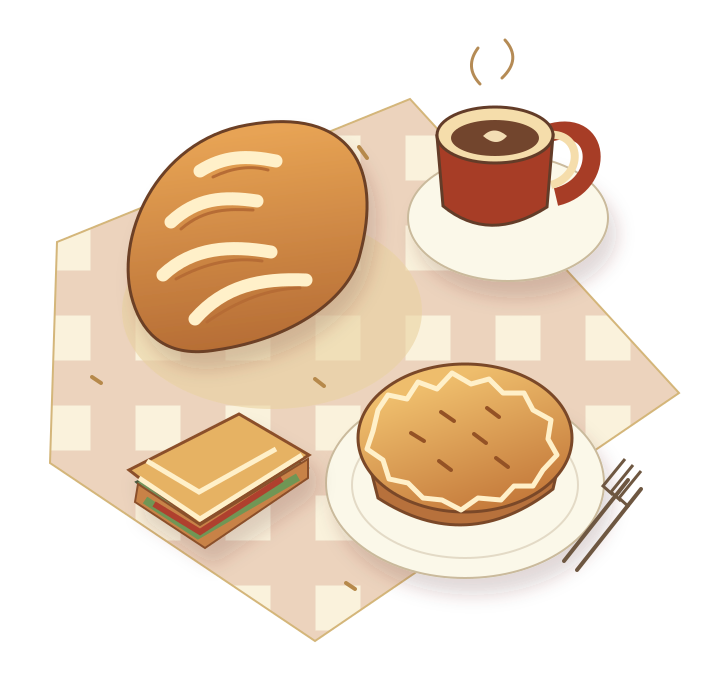

Shepherd’s pie
The bakery’s signature pie, listed on its official menu.
Your neighbourhood bakery · Glen Iris
Handmade pies, a sandwich bar and something sweet. Find your next favourite on High Street.
1618 High Street · Glen Iris, Melbourne

Glen Iris Bakery Cafe
HIGH STREET · GLEN IRIS
Behind the counter
The bakery describes itself as a small family business, with food handmade on site and an open kitchen.
From savoury pies to sandwiches and sweets, the published range gives you plenty to explore. Visit the official website for the bakery’s story and current details.
More about the bakery ↗Find your way to High Street
1618 High St, Glen Iris
VIC 3146, Australia
A quick hello before you go
0493 378 570 ↗glenirisbakerycafe@gmail.com ↗Call to check current opening hours, the day’s selection or a special request.
Official contact & hours ↗